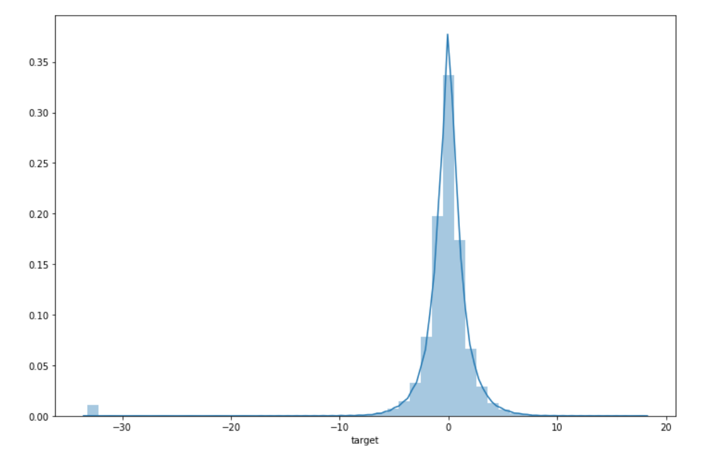
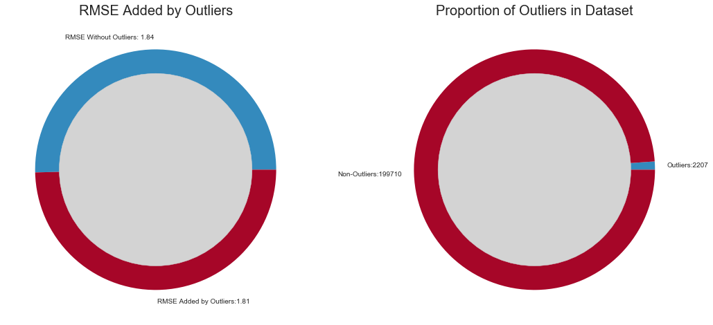
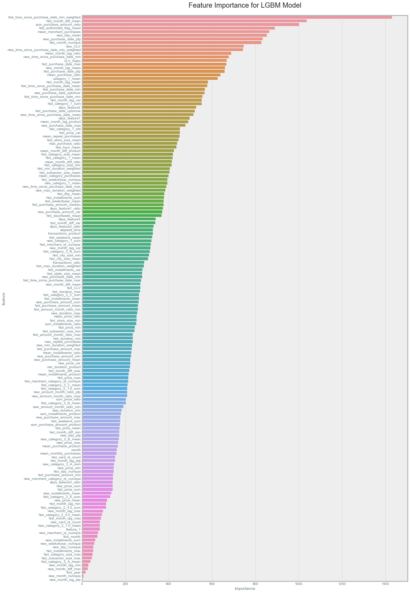
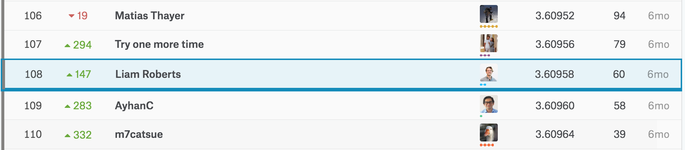

Project Summary:
This project looked at methods for identifying signal in customer loyalty using previous
transaction histories. This model would be capable of improving customer and company relations
by identifying which customers would be the most promising for potential campaigns and sales.
The project started as a kaggle competition, but was later altered to provide more useful predictions.
Dataset:
The dataset consists largely of past customer transactions and credit card features. It is available publically
here. Each customer had at least three months of transaction histories provided. These were broken down further into historical purchases and purchases at newer merchants. Identifying characteristic differences between how a customer made purchases at historical merchants and how they made purchases at new merchants were incredibly benificial to model performance.
The Solution
Though the project was largely centered around the competition, the final model differs slightly from the model used for the competition. The main differences come from how "outliers" are evaluated.
Identifying the Proper Loss Function:
The competion used a RMSE to evaluate model performance. However this lead to scores being heavily bias by just a few "outlier" samples. These outlier samples can be seen as the spike in target values at -33 in the below figure:

Squaring the error for these outliers causes almost 50% of the total RMSE to come from just over 1% of the samples:

In order to reduce the bias towards these outliers a Huber loss function was used which evaluated larger loss values linearly. This lead to a higher overall RMSE (worse competition results),
but a better overall model (closer predicitons 99% of the time). This highlights a major problem that can arise when a model is evaluated based on an arbitrary metric as opposed to acual utility and should be a cautionary example for future competitions.
Key Metrics
A customers transaction history provides a wealth of information however extracting this information isn't always intuitive.
Identifying key metrics based on transaction aggregations greatly improved the models performance.
These aggregations helped the model extrapolate information such as: when customers make their purchases (day,week,month) and
what the customer purchases (cost, frequency, new vs historical merchants).
Model Selection
The main model leveraged in this project was the LightGBM algorithm. This algorithm allowed for quick training
and metric experimentation as well as producing the best overall validation scores.
The final model was an ensemble of LightGBM models with Huber Regression as well as an ensemble of models training specifically to target customer outliers.
A list of features as well as plots of their respective importance is summarized in the figure below:

Results
The final model used in the kaggle competition placed 108th out of over 4000 entires (Top 3%).

As stated however this model was considered "worse" in practice than the huber regression models used for the final demo. This final model outperformed the competition model almost 99% of the time.